236편 본문을 읽은 네이버 블로그 글
87편 자막을 읽은 유튜브 영상
119곳 점수를 매긴 제주 관광지
20곳 추려서 소개하는 후보
01
이번 여행의 조건
어디가 좋은지는 누구와 언제 가느냐에 따라 달라집니다. 이번 조사는 아래 여섯 가지 조건에 맞추어 점수를 매겼습니다.
5 다섯 명, 3대가 함께 갑니다 할머니, 부모님, 동생, 나. 계단과 오르막이 적고 앉아 쉴 곳이 있는 장소를 앞에 두었습니다.
숙 숙소는 한림읍 월각로입니다 제주 서쪽 중산간입니다. 숙소에서 운전 30분 안쪽을 중심으로 골랐고, 공항까지는 약 30분이 걸립니다.
차 렌터카로 움직입니다 주차가 쉽고, 주차장에서 볼거리까지 가까운 곳이 유리합니다.
11 11월 14일(토)부터 16일(월)까지입니다 국화, 감귤, 방어가 제철이고 억새는 끝물입니다. 해는 오후 5시 33분쯤 집니다.
비 토요일과 일요일 오전에 비 예보가 있습니다 11월 11일 기상청 중기예보 기준입니다. 실내 후보에 점수를 더 주었고, 바깥 일정은 일요일 오후와 월요일에 모았습니다.
시 도착과 출발 시각이 정해져 있습니다 토요일 07:45에 네 명이 먼저 도착하고 19:20에 한 명이 합류합니다. 월요일은 21:55 비행기라 20:20까지 차를 반납해야 합니다.
02
한눈에 보는 후보 20곳
점수가 70점 이상이면 1순위, 66점 이상이면 2순위, 그 아래는 여건이 되면 갈 곳으로 나누었습니다. 후보 두 곳을 묶은 경우에는 점수가 높은 쪽을 적었습니다. 이름을 누르면 자세한 설명으로 이동합니다.
1 1순위 오설록 티뮤지엄비가 와도 되는 무료 전시관과 차밭 82.2차로 22분 2 1순위 한림공원국화가 피는 큰 정원, 숙소에서 12분 77.4차로 12분 3 1순위 협재·금능 해변주차장에서 바로 보이는 옥빛 바다와 비양도 73.6차로 12분 4 1순위 아르떼뮤지엄 제주숙소에서 11분, 비 오는 날 가기 좋은 실내 전시 72.0차로 11분 5 2순위 제주항공우주박물관오설록 옆의 넓은 실내 전시관, 월요일은 휴관 69.8차로 24분 6 2순위 곽지·한담 해안숙소에서 가장 가까운 바다 68.5차로 8분 7 2순위 감귤 따기 체험11월이 제철, 할머니도 함께 하는 체험 68.3차로 12분 8 2순위 세계자동차&피아노박물관옛 자동차와 피아노, 비 오는 날의 또 다른 선택 68.2차로 22분 9 2순위 수월봉·신창풍차해안의 노을차에서 내려 2분, 서쪽 끝의 노을 68.1차로 21분 10 2순위 모슬포항 방어와 대정오일시장11월부터 제철인 방어, 월요일은 장날 67.4차로 32분 11 2순위 산방산탄산온천쌀쌀하고 비 오는 날 몸을 녹이는 곳 66.6차로 28분 12 여건이 되면 성이시돌목장과 새별오름 억새오르지 않고 아래에서 보는 억새와 목장 65.7차로 13분 13 여건이 되면 도두동 무지개해안도로공항에서 9분, 오가는 길에 들르는 바닷길 65.5차로 27분 14 여건이 되면 카멜리아힐동백이 막 피기 시작하는 큰 정원 64.6차로 24분 15 여건이 되면 동문시장떠나는 날 저녁, 선물 사기와 야시장 64.6차로 32분 16 여건이 되면 천지연폭포와 주상절리대65세 이상 무료, 평지로 걸어가는 폭포 64.6차로 46분 17 여건이 되면 더마파크 기마공연앉아서 보는 50분짜리 말 공연 63.6차로 17분 18 여건이 되면 사계해안에서 보는 산방산차에서 보는 산방산과 형제섬 61.5차로 29분 19 여건이 되면 월령리 선인장군락바닷가 데크길을 20분 59.9차로 15분 20 여건이 되면 한림민속오일시장토요일 하루만 서는 장, 숙소에서 6분 52.0차로 6분
03
숙소에서 얼마나 걸리나
숫자는 위 목록의 번호입니다. 점선 안쪽이 숙소에서 대략 30분 거리입니다. 운전 시간은 오픈스트리트맵 경로 계산값이라 실제로는 조금 더 걸릴 수 있습니다.
04
후보지 자세히 보기
카드마다 숙소에서의 거리, 걷는 정도, 할머니와 갈 때 알아 둘 점을 적었습니다. 아래 단추로 조건에 맞는 곳만 골라 볼 수 있습니다.
전체 1순위만 거의 안 걷는 곳 숙소 20분 이내 비 와도 되는 곳 토요일 일요일 월요일
1 사진: 골뱅이 · CC BY-SA 3.0
1순위 오설록 티뮤지엄실내 전시·찻집 · 서귀포시 안덕면
82.2 점 · 전체 1위
입장료가 없고 실내에 턱이 없어서, 비 예보가 있는 날 가장 먼저 꺼낼 수 있는 곳입니다. 블로그 26편과 유튜브 13편이 언급해 서쪽 후보 가운데 화제성 점수가 가장 높았습니다.
숙소에서차로 22분
머무는 시간1~1.5시간
걷는 정도 ●○○ 거의 안 걷는다
할머니와 갈 때 전시관과 티카페는 평평하고 2층 전망대는 승강기로 올라갑니다. 차밭으로 내려가는 길은 경사가 있고 바닥이 고르지 않습니다. 할머니는 카페 창가에서 차밭을 보시고, 나머지 가족만 잠깐 다녀오는 편이 좋습니다.
미리 알아 둘 점 오전 11시부터 오후 3시 사이와 주말 점심에는 주차장과 카페가 붐빕니다. 9시 개장 직후에 가면 한결 여유롭습니다. 주차장이 길 건너편에 있어 횡단보도를 건너야 합니다.
운영 09:00~18:00, 연중무휴 요금 무료 (차와 디저트는 따로 계산) 주차 무료 묶어 가기 제주항공우주박물관이 바로 옆에 있습니다
공간이 넓어요 10,631명사진이 잘 나와요 9,668명주차하기 편해요 8,235명유익해요 7,080명점수 내역과 근거 자료
화제성 25.8 / 28 만족도 5.7 / 10 어르신 21.8 / 25 동선 12.9 / 15 계절 3.5 / 7 날씨 7.5 / 10 운영 5 / 5
블로그 26편, 유튜브 13편에서 언급했습니다. 네이버 리뷰는 약 65,000건입니다. 카카오맵 별점은 4.1점(978명)입니다.
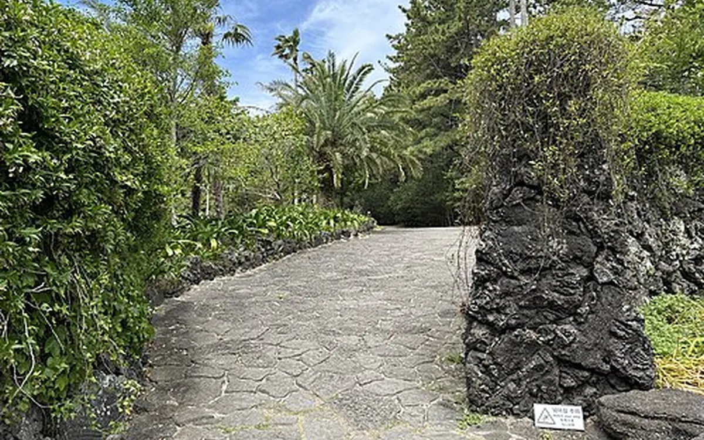
2 11월의 꽃은 국화 사진: Grapesurgeon · CC BY-SA 4.0
1순위 한림공원정원·식물원 · 제주시 한림읍
77.4 점 · 전체 2위
야자수길, 온실, 분재원, 민속마을이 한곳에 모여 있어 어르신이 좋아할 볼거리가 많습니다. 공식 안내의 11월 꽃은 국화이고, 최근 블로그 글에도 나오는 길에 국화가 가득했다는 후기가 있습니다.
숙소에서차로 12분
머무는 시간1.5~2시간
걷는 정도 ●●○ 평지를 조금 걷는다
할머니와 갈 때 길은 대부분 포장되어 있고 벤치와 휴게소가 곳곳에 있어 쉬엄쉬엄 돌 수 있습니다. 매표소에서 휠체어를 빌릴 수 있으니, 오래 걷기 어려우시면 처음부터 빌리는 것을 권합니다. 협재굴과 쌍용굴은 계단으로 드나들기 때문에 할머니는 건너뛰시는 편이 안전합니다.
미리 알아 둘 점 입구 쪽과 일부 정원에는 꽤 가파른 구간(경사 9~13도)이 있습니다. 11월에는 매표가 오후 4시 30분쯤 끝납니다. 2026년 국화축제 기간은 확인하지 못했습니다(2024년과 2025년에는 11월 10일부터 30일까지였습니다).
운영 11~1월 매표 09:00~16:30, 연중무휴 요금 어른 15,000원, 경로(65세 이상) 12,000원, 청소년 10,000원 주차 무료 문의 064-796-0001
산책로가 잘 되어있어요 6,578명볼거리가 많아요 5,977명신기한 식물이 많아요 3,739명주차하기 편해요 3,280명점수 내역과 근거 자료
화제성 20.7 / 28 만족도 7.6 / 10 어르신 17.1 / 25 동선 15 / 15 계절 7 / 7 날씨 5 / 10 운영 5 / 5
블로그 27편, 유튜브 3편에서 언급했습니다. 네이버 리뷰는 약 21,000건입니다. 카카오맵 별점은 4.4점(351명)입니다.
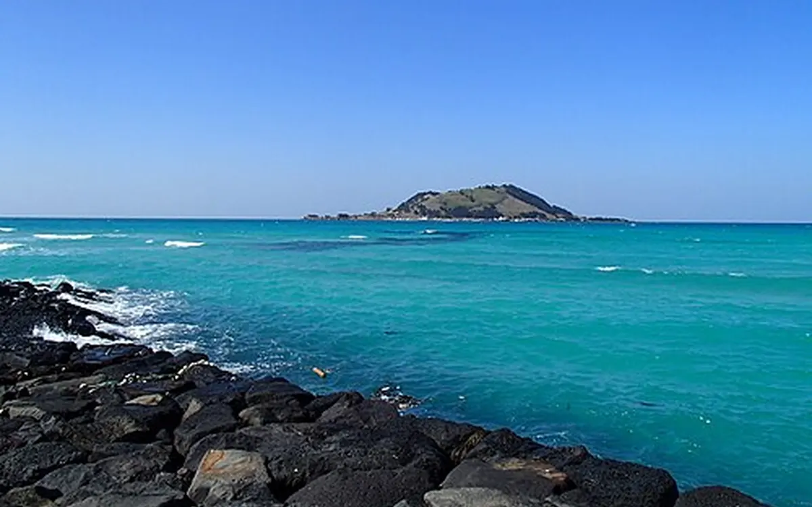
3 사진: Lcarrion88 · CC BY-SA 4.0
1순위 협재·금능 해변바다 · 제주시 한림읍
73.6 점 · 전체 3위
수집한 블로그 236편 가운데 43편이 협재를 언급해 전체 후보 중 가장 많았습니다. 주차장이 해변에 붙어 있어 거의 걷지 않고도 비양도가 떠 있는 바다를 볼 수 있습니다.
숙소에서차로 12분
머무는 시간30분~1시간
걷는 정도 ●○○ 거의 안 걷는다
할머니와 갈 때 모래사장은 발이 빠져 걷기 불편합니다. 주차장 옆 산책로나 바다가 보이는 카페에 자리를 잡는 것이 좋습니다. 금능 쪽이 협재보다 한적합니다.
미리 알아 둘 점 11월의 서쪽 바닷가는 바람이 강합니다. 바람막이와 목도리를 챙기세요. 비가 오는 날에는 차 안이나 카페에서 보는 정도로 잡는 것이 좋습니다. 협재 공영주차장의 11월 요금은 확인하지 못했습니다.
운영 상시 개방 요금 무료 주차 해변 옆 주차장 (블로그 기준으로 금능은 무료) 묶어 가기 한림공원이 길 건너편에 있고, 월령 선인장군락이 차로 5분쯤 걸립니다
점수 내역과 근거 자료
화제성 24.8 / 28 만족도 8.4 / 10 어르신 16.9 / 25 동선 15 / 15 계절 3.5 / 7 날씨 0 / 10 운영 5 / 5
블로그 43편, 유튜브 11편에서 언급했습니다. 네이버 리뷰는 약 16,000건입니다. 카카오맵 별점은 4.5점(461명)입니다. 묶은 곳의 점수: 협재해수욕장 73.6점 · 금능해수욕장 68.7점.
4 그림: 이미지 생성 모델로 그린 상상도
1순위 아르떼뮤지엄 제주실내 전시 · 제주시 애월읍
72.0 점 · 전체 4위
빛과 소리로 파도, 꽃, 폭포를 보여 주는 실내 미디어아트 전시관입니다. 날씨와 상관없고 숙소에서 11분이라 비 예보가 있는 토요일에 넣기 좋습니다. 비 오는 날 부모님과 다녀왔다는 블로그 글이 여럿 있었습니다.
숙소에서차로 11분
머무는 시간1~1.5시간
걷는 정도 ●●○ 평지를 조금 걷는다
할머니와 갈 때 바닥은 평평하고 휠체어를 빌릴 수 있습니다. 다만 안이 어둡고 거울과 바닥 반사가 많아 어지러울 수 있습니다. 할머니 곁에서 팔을 잡고 천천히 걷는 것이 좋습니다. 전시장 안에는 화장실이 없고 다시 들어올 수 없으니 들어가기 전에 다녀오세요.
미리 알아 둘 점 경로 요금은 현장에서 신분증을 보여야 적용됩니다. 카카오맵 별점은 3.7점으로 높지 않습니다. 의자가 얼마나 있는지는 확인하지 못했습니다.
운영 10:00~20:00 (입장 마감 19:00), 연중무휴 요금 성인 18,000원, 경로(1962년 이전 출생) 10,000원, 청소년 14,000원 주차 무료 문의 1899-5008
점수 내역과 근거 자료
화제성 19.2 / 28 만족도 3 / 10 어르신 16.3 / 25 동선 15 / 15 계절 3.5 / 7 날씨 10 / 10 운영 5 / 5
블로그 11편, 유튜브 7편에서 언급했습니다. 카카오맵 별점은 3.7점(370명)입니다.
5 사진: Hunini · CC BY-SA 3.0
2순위 제주항공우주박물관실내 전시 · 서귀포시 안덕면
69.8 점 · 전체 6위
실제 항공기가 걸려 있는 큰 실내 전시관입니다. 오설록과 붙어 있어 비 오는 날 두 곳을 이어서 보기 좋습니다. 비행기와 우주에 관심 있는 가족이 있다면 만족도가 높은 곳입니다.
숙소에서차로 24분
머무는 시간1~1.5시간
걷는 정도 ●●○ 평지를 조금 걷는다
할머니와 갈 때 실내가 넓어 걷는 거리는 꽤 됩니다. 1층 항공 전시만 보고 로비에서 쉬는 식으로 나누어 보는 것이 좋습니다. 휠체어 대여와 승강기는 공식 안내에서 확인하지 못했으니 전화(064-800-2114)로 물어보세요.
미리 알아 둘 점 11월 16일 월요일은 휴관입니다 (매월 셋째 월요일). 토요일이나 일요일에만 갈 수 있습니다.
운영 09:00~18:00 (매표 마감 17:00) 요금 성인 10,000원, 경로(65세 이상) 8,000원, 청소년 9,000원 주차 무료 휴관 매월 셋째 월요일
유익해요 5,198명전시 구성이 알차요 4,183명주차하기 편해요 3,649명체험 프로그램이 다양해요 3,604명점수 내역과 근거 자료
화제성 15.1 / 28 만족도 4.9 / 10 어르신 21.5 / 25 동선 12.3 / 15 계절 3.5 / 7 날씨 10 / 10 운영 2.5 / 5
블로그 3편, 유튜브 2편에서 언급했습니다. 네이버 리뷰는 약 21,000건입니다. 카카오맵 별점은 4점(143명)입니다.
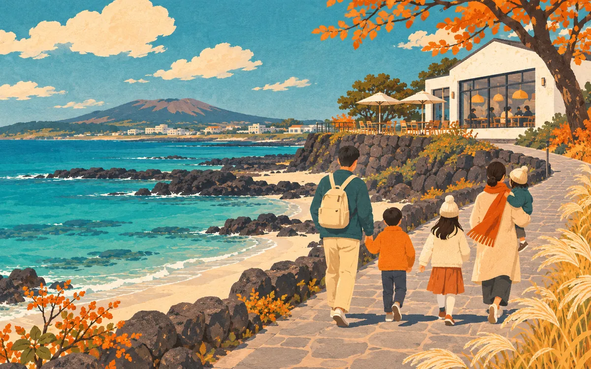
6 그림: 이미지 생성 모델로 그린 상상도
2순위 곽지·한담 해안바다 · 제주시 애월읍
68.5 점 · 전체 8위
숙소에서 차로 8분이면 닿는 가장 가까운 바다입니다. 체크인 전후나 아침에 잠깐 바람을 쐬기에 알맞습니다. 한담해안산책로는 블로그 20편과 유튜브 8편이 언급한 애월의 대표 산책길입니다.
숙소에서차로 8분
머무는 시간30분~1시간
걷는 정도 ●●○ 평지를 조금 걷는다
할머니와 갈 때 할머니와는 곽지해수욕장 쪽 으로 가는 것을 권합니다. 포장된 광장과 관람로가 평탄해서 바다 가까이까지 무리 없이 갈 수 있습니다. 한담 쪽은 주차장에서 산책로로 내려가는 길이 가파르고(경사 9~17도) 계단이 있습니다.
미리 알아 둘 점 한담공원 무료 주차장은 10~15대뿐이고 민영 주차장은 1시간에 3,000~4,000원입니다. 파도가 높은 날에는 산책로가 통제될 수 있습니다.
운영 상시 개방 요금 무료 길이 한담해안산책로 1.2km, 편도 20~30분 주차 곽지해수욕장 주차장
사진이 잘 나와요 238명물놀이하기 좋아요 222명주차하기 편해요 188명조용히 쉬기 좋아요 154명점수 내역과 근거 자료
화제성 20.5 / 28 만족도 7.5 / 10 어르신 17 / 25 동선 15 / 15 계절 3.5 / 7 날씨 0 / 10 운영 5 / 5
블로그 20편, 유튜브 9편에서 언급했습니다. 네이버 리뷰는 약 8,236건입니다. 카카오맵 별점은 4.6점(238명)입니다. 묶은 곳의 점수: 곽지해수욕장 68.5점 · 한담해안산책로 65.1점.
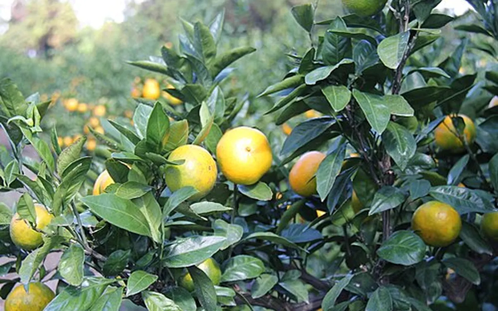
7 감귤 제철 사진: Korea.net / Korean Culture and Information Service · CC BY-SA 2.0
2순위 감귤 따기 체험체험 · 한림·애월 또는 안덕의 농장
68.3 점 · 전체 9위
11월 중순은 노지 감귤이 주황색으로 익는 때입니다. 블로그 30편과 유튜브 6편이 감귤 체험을 언급했고, 그 가운데 16편이 부모님이나 어르신과 함께한 이야기였습니다. 딴 귤은 숙소에서 먹거나 집으로 가져갈 수 있습니다.
숙소에서차로 12분
머무는 시간40분~1시간
걷는 정도 ●●○ 평지를 조금 걷는다
할머니와 갈 때 밭은 흙길이라 비가 온 직후에는 미끄럽습니다. 할머니는 입구 가까운 나무에서 몇 개만 따시고, 농장 카페나 의자에서 쉬시면 무리가 없습니다. 밭이 평탄한지는 농장마다 다르니 전화할 때 물어보세요.
미리 알아 둘 점 농장마다 쉬는 날이 다르고, 귤이 다 떨어지면 일찍 끝냅니다. 가기 전에 반드시 전화로 확인하세요. 비가 오는 날에는 체험이 어렵습니다. 차로 12분은 한림과 애월의 농장 기준이고, 안덕의 농장은 25분쯤 걸립니다. 농장이 여러 곳이라 지도에는 표시하지 않았습니다.
숙소 근처 카페귤한가 (한림읍 명월성로 238-1): 목~일 영업, 1.5kg에 10,000원 숙소 근처 탐나는농장 감귤체험카페 (애월읍 오당빌레길 88): 1kg에 약 10,000원, 10:00~17:30. 일요일에 여는지 전화로 확인하세요 (0507-1426-2723) 안덕 파더스가든 (안덕면 병악로 44-33): 09:00~18:00, 연중무휴. 정원 입장과 귤 체험 1.5kg에 성인 32,000원, 경로 30,000원 안덕 은하감귤체험농장 (안덕면 덕수서로 250): 약 1.2kg에 10,000원, 09:40~16:40 (064-792-0008)
점수 내역과 근거 자료
화제성 17.5 / 28 만족도 5 / 10 어르신 17.5 / 25 동선 15 / 15 계절 7 / 7 날씨 2.5 / 10 운영 3.8 / 5
블로그 30편, 유튜브 6편에서 언급했습니다.
8 그림: 이미지 생성 모델로 그린 상상도
2순위 세계자동차&피아노박물관실내 전시 · 서귀포시 안덕면
68.2 점 · 전체 10위
클래식 자동차와 옛 피아노를 모아 둔 실내 박물관입니다. 네이버 리뷰가 약 2만 5천 건이고, 방문자들은 "유익해요"와 "전시 구성이 알차요"를 가장 많이 골랐습니다. 사흘 내내 문을 엽니다.
숙소에서차로 22분
머무는 시간1~1.5시간
걷는 정도 ●●○ 평지를 조금 걷는다
할머니와 갈 때 로비에서 휠체어를 빌릴 수 있습니다. 실내 전시 위주로 보고, 야외 전시와 산책로는 날씨와 체력을 보아 정하면 됩니다.
미리 알아 둘 점 수집한 블로그 글에는 한 번도 나오지 않아 화제성 점수가 낮습니다. 실내라는 점과 리뷰 수로 점수를 얻은 곳이라, 가족 취향에 맞는지는 따로 판단해야 합니다. 승강기가 있는지는 확인하지 못했습니다.
운영 09:00~18:00 (입장 마감 17:20), 연중무휴 요금 성인 13,000원, 경로(65세 이상) 10,000원, 중고생 12,000원 주차 무료
유익해요 6,468명전시 구성이 알차요 6,291명아이와 가기 좋아요 4,532명주차하기 편해요 4,500명점수 내역과 근거 자료
화제성 11.3 / 28 만족도 6 / 10 어르신 19.5 / 25 동선 12.9 / 15 계절 3.5 / 7 날씨 10 / 10 운영 5 / 5
블로그 0편, 유튜브 2편에서 언급했습니다. 네이버 리뷰는 약 25,000건입니다. 카카오맵 별점은 4.2점(108명)입니다.
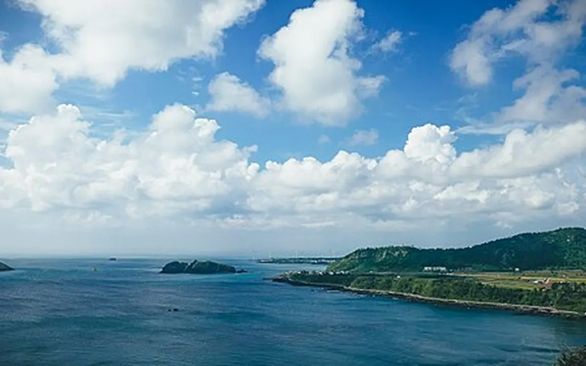
9 일몰 17:33 사진: Sohyeon Bak · CC BY-SA 3.0
2순위 수월봉·신창풍차해안의 노을바다·노을 · 제주시 한경면
68.1 점 · 전체 11위
신창풍차해안도로는 차창 밖으로 풍력발전기와 바다가 이어지는 길이고, 수월봉은 차귀도 너머로 해가 지는 것을 보는 곳입니다. 유튜브 영상 11편이 수월봉을, 10편이 신창을 다루었습니다. 수월봉은 정상 가까이까지 차로 올라갑니다.
숙소에서차로 21분
머무는 시간약 1시간
걷는 정도 ●○○ 거의 안 걷는다
할머니와 갈 때 수월봉은 정상 아래 주차장에서 2분쯤 걸으면 정자가 나옵니다. 신창에서는 차에서 내리지 않아도 풍차가 보입니다. 바다 위 다리는 입구에 계단이 17개 있어 할머니는 건너지 않으시는 편이 좋습니다.
미리 알아 둘 점 해는 오후 5시 33분쯤 집니다. 5시 전에 수월봉에 도착해야 여유가 있습니다. 서쪽 끝이라 바람이 매우 강하니 두꺼운 겉옷이 필요합니다. 신창의 바다 위 산책로는 만조 때 일부 닫히는데, 사흘 모두 오후 2시에서 4시 조금 넘어서까지가 만조입니다. 흐리면 노을을 볼 수 없으니 그날 하늘을 보고 정하세요.
운영 상시 개방 요금 무료 주차 무료 (신창 공영주차장 36면, 수월봉 정상 아래 주차장) 거리 숙소에서 신창까지 21분, 수월봉까지 29분
뷰가 좋아요 129명사진이 잘 나와요 106명산책로가 잘 되어있어요 76명주차하기 편해요 39명점수 내역과 근거 자료
화제성 20.4 / 28 만족도 9.3 / 10 어르신 16.2 / 25 동선 13.2 / 15 계절 5.2 / 7 날씨 0 / 10 운영 3.8 / 5
블로그 14편, 유튜브 11편에서 언급했습니다. 네이버 리뷰는 약 4,900건입니다. 카카오맵 별점은 4.6점(159명)입니다. 묶은 곳의 점수: 신창풍차해안도로 68.1점 · 수월봉 65.2점.
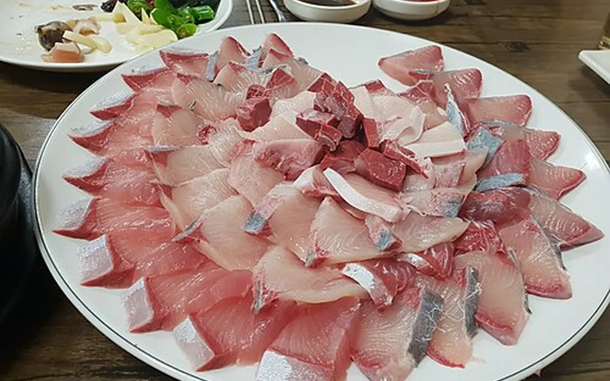
10 방어 제철 사진: Choi2451 · CC BY-SA 4.0
2순위 모슬포항 방어와 대정오일시장제철 음식·시장 · 서귀포시 대정읍
67.4 점 · 전체 12위
방어는 11월부터 잡히기 시작해 겨울이 제철입니다. 올해 조업도 이미 시작됐습니다. 모슬포항 주변에 방어 횟집이 모여 있고, 월요일(16일)에는 근처에서 대정오일시장이 섭니다.
숙소에서차로 32분
머무는 시간식사 1~1.5시간
걷는 정도 ●○○ 거의 안 걷는다
할머니와 갈 때 식사가 중심이라 걷는 부담이 없습니다. 회를 잘 못 드시는 분이 있다면 익힌 방어 요리가 되는지 예약할 때 물어보세요.
미리 알아 둘 점 올해는 초반 어획량이 줄어 값이 올랐습니다. 가격이 시가인 곳이 많으니 전화로 확인하세요. 최남단 방어축제는 11월 19일부터 22일까지라 여행 기간과 겹치지 않습니다. 대정오일시장은 오후 2시쯤 파장합니다.
식당 부두식당 (0507-1422-1240): 대방어회 소 60,000원부터 대 100,000원까지 식당 항구식당 (064-794-2254), 돈방석수산 (064-794-1485) 장날 대정오일시장: 11월 16일(월) 08:00~14:00 주차 식당 주차장 무료
뷰가 좋아요 8명사진이 잘 나와요 6명볼거리가 많아요 3명먹거리가 풍부해요 3명점수 내역과 근거 자료
화제성 13.8 / 28 만족도 4.8 / 10 어르신 19.4 / 25 동선 9.9 / 15 계절 7 / 7 날씨 7.5 / 10 운영 5 / 5
블로그 9편, 유튜브 2편에서 언급했습니다. 네이버 리뷰는 약 1,588건입니다. 카카오맵 별점은 3.9점(10명)입니다. 묶은 곳의 점수: 모슬포항 67.4점 · 대정오일시장 45.6점.
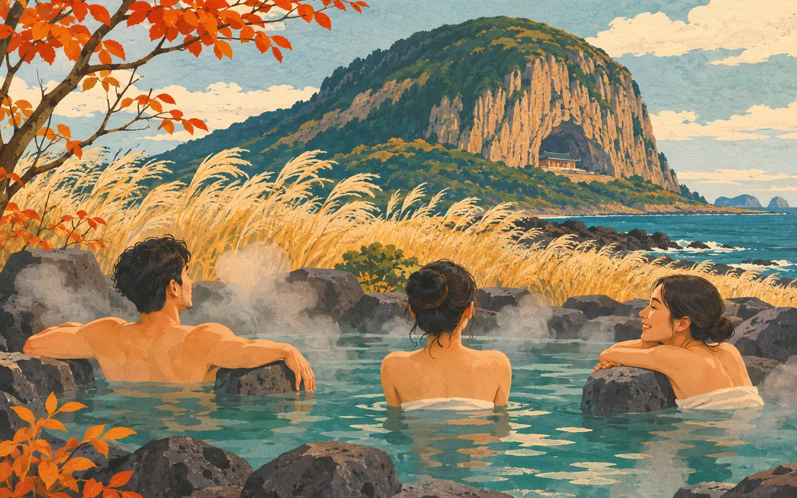
11 그림: 이미지 생성 모델로 그린 상상도
2순위 산방산탄산온천온천 · 서귀포시 안덕면
66.6 점 · 전체 15위
비가 오거나 바람이 차가운 날에 쓰기 좋은 선택지입니다. 네이버 리뷰가 약 3만 1천 건이고, 블로그에서는 부모님의 다리 피로를 풀어 드리는 코스로 소개됩니다.
숙소에서차로 28분
머무는 시간1.5~2시간
걷는 정도 ●○○ 거의 안 걷는다
할머니와 갈 때 실내 온천만 이용하면 준비물이 필요 없습니다. 탕 바닥이 미끄러울 수 있으니 할머니 곁에는 꼭 한 사람이 붙어 있어야 합니다. 남탕과 여탕이 나뉘므로 누가 할머니와 들어갈지 미리 정해 두세요.
미리 알아 둘 점 노천탕은 남녀가 함께 쓰는 곳이라 수영복이나 반팔·반바지가 필요합니다(대여 2,000원). 주말에는 붐빈다는 후기가 많아 월요일이 낫습니다. 카카오맵 별점은 3.7점이고, 경로 할인은 없습니다.
운영 실내 온천 06:00~23:00, 노천탕 10:00~22:00, 연중무휴 요금 대인 14,000원, 노천탕 추가 5,000원 문의 064-792-8300
주차하기 편해요 5,283명수질 관리가 잘돼요 4,568명규모가 커요 4,295명시설이 깔끔해요 4,133명점수 내역과 근거 자료
화제성 12.9 / 28 만족도 3 / 10 어르신 17.6 / 25 동선 11.1 / 15 계절 7 / 7 날씨 10 / 10 운영 5 / 5
블로그 3편, 유튜브 0편에서 언급했습니다. 네이버 리뷰는 약 31,000건입니다. 카카오맵 별점은 3.7점(363명)입니다.
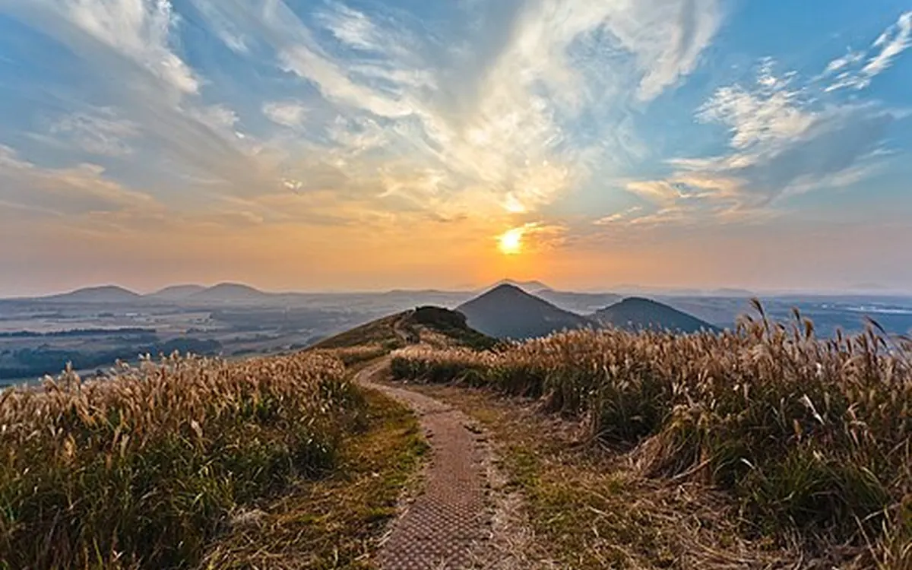
12 억새 끝물 사진: HiHoHo · CC BY-SA 3.0
여건이 되면 성이시돌목장과 새별오름 억새목장·오름 · 제주시 한림읍·애월읍
65.7 점 · 전체 17위
숙소에서 15분 안쪽에 있는 중산간 풍경 두 곳입니다. 새별오름은 블로그 27편이 언급한 억새 명소이고, 성이시돌목장은 말과 소가 풀을 뜯는 초원과 이국적인 테쉬폰 건물로 알려져 있습니다. 둘 다 무료입니다.
숙소에서차로 13분
머무는 시간각 30~40분
걷는 정도 ●●○ 평지를 조금 걷는다
할머니와 갈 때 새별오름 정상은 가파른 길을 20~30분 올라야 해서 권하지 않습니다. 억새는 주차장 쪽 평지에서도 볼 수 있으니 아래에서 사진만 찍으면 됩니다. 성이시돌목장은 주차장 옆 우유부단 카페에서 초원을 보며 쉬는 정도가 알맞습니다.
미리 알아 둘 점 억새는 10월 중순부터 11월 초가 절정이라 지금은 끝물일 수 있습니다. 목장 안쪽 길은 짚길과 돌길이고 벤치가 없습니다. 테쉬폰은 울타리가 있어 밖에서만 볼 수 있습니다.
운영 상시 개방 (우유부단 카페 10:00~18:00) 요금 무료 주차 무료 (새별오름 약 300대) 거리 숙소에서 목장까지 13분, 새별오름까지 15분
점수 내역과 근거 자료
화제성 18.5 / 28 만족도 3.2 / 10 어르신 18 / 25 동선 15 / 15 계절 3.5 / 7 날씨 2.5 / 10 운영 5 / 5
블로그 27편, 유튜브 8편에서 언급했습니다. 카카오맵 별점은 3.7점(150명)입니다. 묶은 곳의 점수: 성이시돌목장 65.7점 · 새별오름 65.3점.
13 그림: 이미지 생성 모델로 그린 상상도
여건이 되면 도두동 무지개해안도로바다 · 제주시 도두동
65.5 점 · 전체 19위
공항에서 9분 거리라 도착한 날 아침이나 떠나는 날 저녁에 끼워 넣기 좋습니다. 무지개색 방호석이 바다를 따라 이어지고, 길이 평지라 15~20분이면 충분합니다.
숙소에서차로 27분
머무는 시간20~30분
걷는 정도 ●●○ 평지를 조금 걷는다
할머니와 갈 때 해안 인도는 평지입니다. 도두봉 정상은 첫 계단이 가파르므로 할머니와는 해안도로만 걷는 것을 권합니다. 화장실이 따로 없으니 미리 다녀오세요.
미리 알아 둘 점 주차 공간이 좁아 갓길에 대야 하는 경우가 많습니다. 비가 오면 건너뛰어도 아쉽지 않은 곳입니다.
운영 상시 개방 요금 무료 주차 도두봉 입구 무료 주차장 약 20대, 해안도로 갓길
뷰가 좋아요 177명사진이 잘 나와요 137명산책로가 잘 되어있어요 70명방문객이 많아요 54명점수 내역과 근거 자료
화제성 19.6 / 28 만족도 9.3 / 10 어르신 16.7 / 25 동선 11.4 / 15 계절 3.5 / 7 날씨 0 / 10 운영 5 / 5
블로그 11편, 유튜브 8편에서 언급했습니다. 네이버 리뷰는 약 4,868건입니다. 카카오맵 별점은 4.6점(143명)입니다.
[제주] 서쪽 가볼만한 곳 여행 코스 추천ㅣ무지개해안도로, 이호테우 말등대, 성이시돌목장, 유니클로 (네이버 블로그) 3대가 같이 4월 제주여행 2박3일코스 - 애월,신화월드,신라호텔, 도두봉, 옷차림 등 (네이버 블로그) 11월 제주도 가볼만한곳 추천, 우도부터 서귀포까지 제주 겨울 여행 코스 (네이버 블로그) If you go to Jeju Island again, we have selected the BEST 14 places to (유튜브, 조회 2,466,019회) There's no video of the Jeju West Course that covers everything like t (유튜브, 조회 519,798회) 비짓제주 도두동 무지개해안도로 (운영 정보 확인)
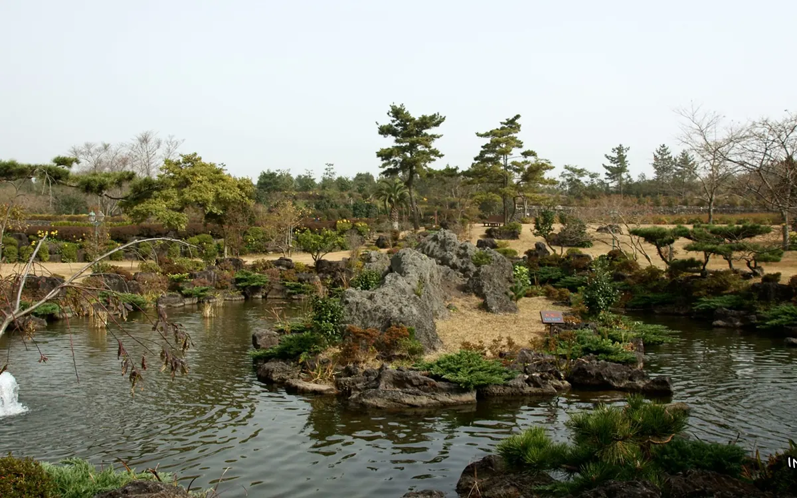
14 동백이 피기 시작 사진: 골뱅이 · CC BY-SA 3.0
여건이 되면 카멜리아힐정원 · 서귀포시 안덕면
64.6 점 · 전체 25위
블로그 29편이 언급했고 네이버 리뷰는 약 7만 2천 건으로 후보 가운데 가장 많습니다. 애기동백은 11월 중순부터 피기 시작해 12월과 1월에 절정을 맞습니다. 올해 실제 개화 상태는 확인하지 못했습니다.
숙소에서차로 24분
머무는 시간1~1.5시간
걷는 정도 ●●● 오르막·계단이 있다
할머니와 갈 때 입구에서 휠체어를 빌릴 수 있습니다. 다만 길에 오르내림(경사 5~14도)이 잦고 바닥이 야자 매트와 돌이라 울퉁불퉁합니다. 입구 가까운 동백숲과 카페 주변만 짧게 도는 것을 권합니다.
미리 알아 둘 점 걷는 부담이 커서 어르신 점수가 낮게 나왔습니다. 핑크뮬리는 10월이 절정이라 지금은 색이 빠졌을 가능성이 큽니다. 입장은 오후 5시에 마감합니다.
운영 08:30~18:00 (입장 마감 17:00), 연중무휴 요금 성인 12,000원, 경로(65세 이상) 10,000원, 청소년 10,000원 주차 무료
산책로가 잘 되어있어요 12,543명볼거리가 많아요 8,467명사진이 잘 나와요 7,381명뷰가 좋아요 6,234명점수 내역과 근거 자료
화제성 21.7 / 28 만족도 4.1 / 10 어르신 13.8 / 25 동선 12.3 / 15 계절 5.2 / 7 날씨 2.5 / 10 운영 5 / 5
블로그 29편, 유튜브 2편에서 언급했습니다. 네이버 리뷰는 약 72,000건입니다. 카카오맵 별점은 3.9점(440명)입니다.
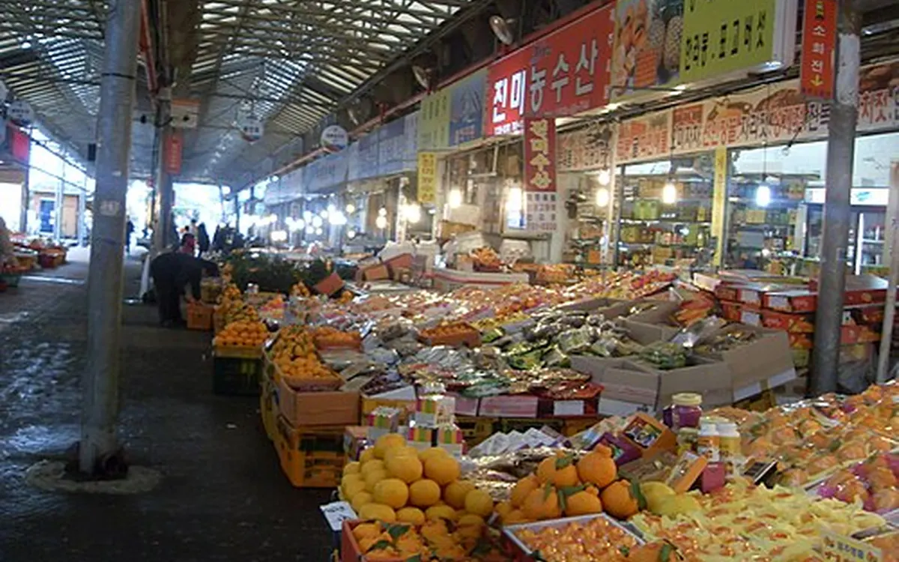
15 사진: thddbwnd · CC BY 3.0
유튜브 영상 15편이 다루어 유튜브 언급이 가장 많은 축에 듭니다. 공항에서 7분이라 월요일 저녁 렌터카를 반납하기 전에 감귤이나 오메기떡 같은 선물을 사기 좋습니다. 야시장은 오후 6시에 엽니다.
숙소에서차로 32분
머무는 시간40분~1시간
걷는 정도 ●●○ 평지를 조금 걷는다
할머니와 갈 때 통로가 좁고 저녁에는 사람이 많습니다. 할머니는 입구 가까운 가게만 둘러보시고, 야시장 음식은 다른 가족이 사 오는 편이 편합니다.
미리 알아 둘 점 저녁에는 주변 도로가 막힙니다. 렌터카는 20:20까지 반납하는 것이 좋으니, 7시 30분에는 시장을 떠나야 안전합니다. 카카오맵 별점은 3.6점입니다.
운영 시장 07:00~21:00, 야시장 18:00~24:00 (8번 게이트 근처) 주차 공영주차장 30분 무료, 이후 15분에 500원
볼거리가 많아요 40명야시장이 잘 되어있어요 27명먹거리가 풍부해요 22명친절해요 20명점수 내역과 근거 자료
화제성 22.9 / 28 만족도 3 / 10 어르신 12.8 / 25 동선 9.9 / 15 계절 3.5 / 7 날씨 7.5 / 10 운영 5 / 5
블로그 21편, 유튜브 15편에서 언급했습니다. 네이버 리뷰는 약 10,000건입니다. 카카오맵 별점은 3.6점(826명)입니다.
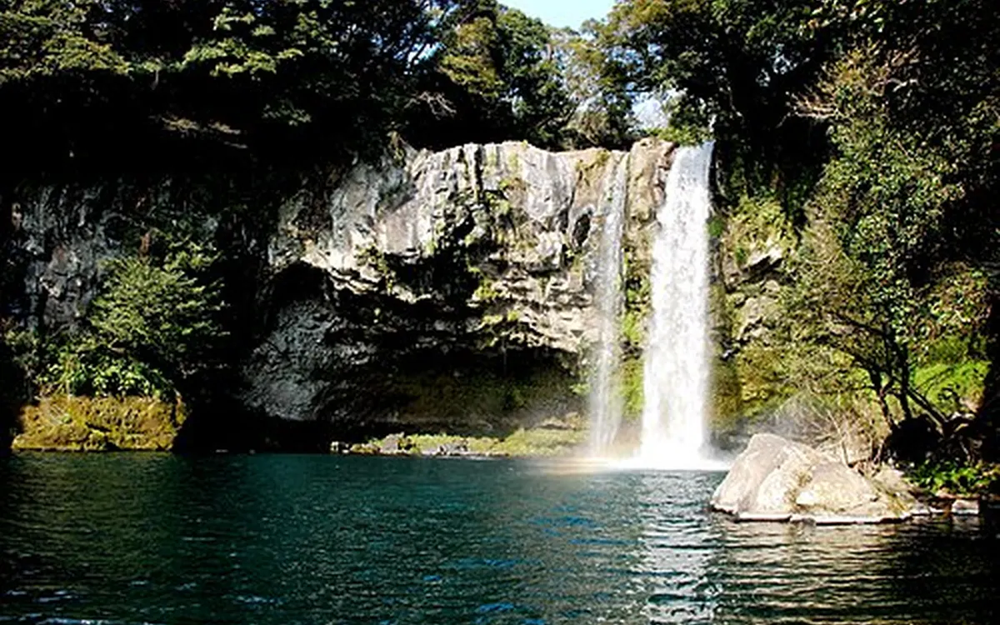
16 사진: Martin Chen · CC BY 2.0
여건이 되면 천지연폭포와 주상절리대폭포·해안 절경 · 서귀포시
64.6 점 · 전체 27위
천지연폭포는 수집한 글에서 부모님이나 어르신과 함께 언급된 횟수가 가장 많은 축에 듭니다. 매표소에서 폭포까지 판석이 깔린 평지입니다. 다만 숙소에서 46분이 걸려 서귀포까지 내려가는 날에만 넣을 수 있습니다.
숙소에서차로 46분
머무는 시간1.5시간
걷는 정도 ●●○ 평지를 조금 걷는다
할머니와 갈 때 폭포까지 550~750m를 걸어야 하니 중간 벤치에서 쉬어 가세요. 휠체어를 빌릴 수 있습니다. 폭포 바로 앞에는 계단이 몇 단 있고, 계단을 피하려면 들어온 길로 되돌아 나오면 됩니다. 주상절리대는 데크길이지만 계단이 조금 있습니다.
미리 알아 둘 점 왕복 운전만 1시간 30분이 넘습니다. 사흘 일정에서는 서쪽에 집중하고 서귀포는 다음 여행으로 미루는 것도 방법입니다. 주상절리대는 오후 5시 30분에 입장을 마감합니다.
운영 천지연폭포 09:00~22:00 (입장 마감 21:20), 주상절리대 09:00~17:50 요금 각각 성인 2,000원, 65세 이상은 신분증을 내면 무료 주차 천지연 230대, 주상절리대 1,000~2,000원
뷰가 좋아요 390명사진이 잘 나와요 276명주차하기 편해요 216명경관이 독특해요 189명점수 내역과 근거 자료
화제성 23.2 / 28 만족도 6.5 / 10 어르신 18.2 / 25 동선 5.7 / 15 계절 3.5 / 7 날씨 2.5 / 10 운영 5 / 5
블로그 21편, 유튜브 12편에서 언급했습니다. 네이버 리뷰는 약 15,000건입니다. 카카오맵 별점은 4.4점(346명)입니다. 묶은 곳의 점수: 천지연폭포 64.6점 · 주상절리대 57.3점.
17 그림: 이미지 생성 모델로 그린 상상도
여건이 되면 더마파크 기마공연공연 · 제주시 한림읍
63.6 점 · 전체 30위
달리는 말 위에서 펼치는 기마 공연을 50분 동안 앉아서 봅니다. 블로그 6편 가운데 5편이 부모님과 함께 본 이야기였습니다. 네이버 방문자들은 "볼거리가 많아요"를 많이 골랐습니다.
숙소에서차로 17분
머무는 시간1~1.5시간
걷는 정도 ●○○ 거의 안 걷는다
할머니와 갈 때 공연 내내 앉아 있으므로 걷는 부담이 적습니다. 관람석이 계단식이라 아래쪽 자리에 앉는 것이 좋습니다. 야외 공연장이니 무릎 담요를 챙기세요.
미리 알아 둘 점 공연장에 지붕이 있는지, 비가 오면 공연을 하는지는 확인하지 못했습니다. 공식 공지가 2024년 이후 바뀌지 않았으니 가기 전에 전화(064-795-8080)로 공연 시간을 확인하세요. 경로 요금도 확인하지 못했습니다.
공연 10:30, 14:00, 16:30 (약 50분) 요금 성인 25,000원, 청소년 22,000원 주차 있음
주차하기 편해요 2,443명볼거리가 많아요 2,351명아이와 가기 좋아요 1,724명가격이 합리적이에요 1,426명점수 내역과 근거 자료
화제성 14.1 / 28 만족도 6.5 / 10 어르신 18.8 / 25 동선 14.4 / 15 계절 3.5 / 7 날씨 2.5 / 10 운영 3.8 / 5
블로그 6편, 유튜브 0편에서 언급했습니다. 네이버 리뷰는 약 12,000건입니다. 카카오맵 별점은 4.3점(100명)입니다.
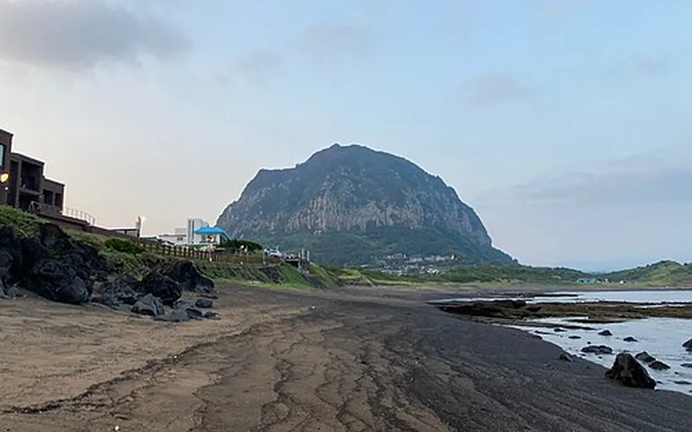
18 사진: Sgroey · CC BY-SA 4.0
여건이 되면 사계해안에서 보는 산방산드라이브 · 서귀포시 안덕면
61.5 점 · 전체 38위
산방산은 블로그 29편과 유튜브 11편이 언급한 서남쪽의 상징입니다. 사계해안도로를 달리면 차 안에서 산방산과 형제섬, 송악산이 한눈에 들어옵니다. 오설록이나 모슬포를 오가는 길에 끼워 넣을 수 있습니다.
숙소에서차로 29분
머무는 시간20~30분
걷는 정도 ●○○ 거의 안 걷는다
할머니와 갈 때 차에서 내리지 않아도 충분합니다. 사계해변 공용주차장에 잠깐 세우고 사진을 찍는 정도가 알맞습니다.
미리 알아 둘 점 용머리해안은 권하지 않습니다. 사흘 모두 한낮(오후 1~3시)이 만조라 통제될 가능성이 크고, 바닥이 젖은 바위와 계단입니다. 산방굴사도 돌계단을 올라야 합니다.
운영 상시 개방 요금 무료 주차 사계해변 공용주차장 (화장실 없음)
뷰가 좋아요 209명경관이 독특해요 152명사진이 잘 나와요 138명주차하기 편해요 63명점수 내역과 근거 자료
화제성 22.2 / 28 만족도 7.7 / 10 어르신 12.3 / 25 동선 10.8 / 15 계절 3.5 / 7 날씨 0 / 10 운영 5 / 5
블로그 29편, 유튜브 11편에서 언급했습니다. 네이버 리뷰는 약 6,256건입니다. 카카오맵 별점은 4.7점(190명)입니다. 묶은 곳의 점수: 사계해변·형제해안로 61.4점 · 산방산 61.5점.
제주도 2박 3일 여행 코스 ① 부모님과 제주여행｜한라산 1100고지·산방산·신화월드 서머셋·롯데렌터카 쏘나타·갈치구이 맛집 (네이버 블로그) 🌴제주도 9월 4박5일｜3대가 함께한 제주도 가족여행, 일정·숙소·렌트 예약부터 경비까지 총정리 (네이버 블로그) 2026 제주도 가을여행 BEST 20억새·오름·바다·시장 부모님과 가볼 만한 곳 (네이버 블로그) If you go to Jeju Island again, we have selected the BEST 14 places to (유튜브, 조회 2,466,019회) 70 Recommended Spots in Seogwipo, Jeju Island 🍊 Tourist Attractions, R (유튜브, 조회 1,225,533회) 비짓제주 사계해변 (운영 정보 확인) 화순항 물때표 (운영 정보 확인)
19 그림: 이미지 생성 모델로 그린 상상도
여건이 되면 월령리 선인장군락바다 산책 · 제주시 한림읍
59.9 점 · 전체 44위
검은 현무암 해안을 따라 선인장이 자라는 마을입니다. 데크길이 약 450m로 짧고 사람이 적어, 협재나 한림공원을 본 뒤 조용히 걷기에 좋습니다. 네이버 방문자들은 "붐비지 않아요"를 골랐습니다.
숙소에서차로 15분
머무는 시간20~30분
걷는 정도 ●●○ 평지를 조금 걷는다
할머니와 갈 때 데크 시작과 끝에는 경사가 있습니다. 가운데 평탄한 구간만 걷고 되돌아오면 됩니다.
미리 알아 둘 점 블로그 3편, 유튜브 1편으로 언급이 적은 곳입니다. 선인장 꽃은 6월에 피므로 지금은 바다 풍경이 중심입니다. 주차는 포구 옆 공터에 합니다.
사진이 잘 나와요 54명산책로가 잘 되어있어요 48명뷰가 좋아요 40명붐비지 않아요 36명점수 내역과 근거 자료
화제성 12.1 / 28 만족도 8.4 / 10 어르신 15.9 / 25 동선 15 / 15 계절 3.5 / 7 날씨 0 / 10 운영 5 / 5
블로그 3편, 유튜브 1편에서 언급했습니다. 네이버 리뷰는 약 1,946건입니다. 카카오맵 별점은 4.6점(110명)입니다.
20 토요일이 장날 그림: 이미지 생성 모델로 그린 상상도
여건이 되면 한림민속오일시장시장 · 제주시 한림읍
52.0 점 · 전체 70위
4일과 9일에 서는 오일장이라 11월 14일 토요일이 장날 입니다. 숙소에서 6분 거리이고 평지 장터입니다. 옥돔과 참조기 같은 한림항 수산물, 빙떡과 순대국밥 같은 장터 음식이 있습니다. 숙소에서 먹을 과일과 찬거리를 사기에도 좋습니다.
숙소에서차로 6분
머무는 시간40분~1시간
걷는 정도 ●●○ 평지를 조금 걷는다
할머니와 갈 때 평지라 걷기는 편합니다. 비가 오면 바닥이 젖으니 미끄럽지 않은 신발을 신으세요. 장 구경을 좋아하시는 할머니라면 반가워하실 곳입니다.
미리 알아 둘 점 블로그와 유튜브에서는 거의 언급되지 않아 점수가 낮고, 날짜가 맞아서 넣은 후보입니다. 토요일에는 비 예보가 있습니다. 오후 5시쯤 파장합니다.
장날 11월 14일(토) 08:00~17:00 주차 공영주차장 207면 무료 문의 064-796-8830
점수 내역과 근거 자료
화제성 6.3 / 28 만족도 3 / 10 어르신 15 / 25 동선 15 / 15 계절 5.2 / 7 날씨 5 / 10 운영 2.5 / 5
블로그 0편, 유튜브 0편에서 언급했습니다. 네이버 리뷰는 약 576건입니다. 카카오맵 별점은 3.5점(37명)입니다.
05
날짜별로 묶어 보면
확정된 일정이 아니라, 날씨와 운영일을 맞추어 후보를 날짜별로 묶어 본 것입니다. 하루에 두세 곳만 고르고 나머지는 남겨 두는 편이 할머니께 편합니다.
11월 14일 토요일 비 예보. 네 명이 07:45에 도착하고, 16:00 체크인, 19:20 공항 마중
공항 근처에서 아침 을 먹습니다. 우진해장국(06:00~), 미풍해장국 본점(05:00~), 삼대국수회관 본점(07:30~)이 일찍 엽니다.비가 오면 아르떼뮤지엄 (10:00 개장)으로 갑니다. 공항에서 30분, 숙소에서 11분 거리입니다. 점심 뒤에 한림민속오일시장 에서 장을 봅니다. 이날만 서는 장이고 숙소에서 6분입니다. 16:00에 체크인하고 쉽니다. 비가 그치면 곽지해수욕장 (8분)에서 잠깐 바다를 봅니다. 18:30쯤 숙소를 나서 19:20 도착편을 마중합니다. 숙소에서 공항까지 약 30분입니다. 비가 오지 않으면 아르떼뮤지엄 대신 도두동 무지개해안도로(공항 9분)와 오설록을 넣을 수 있습니다. 항공우주박물관은 월요일에 휴관하므로 가려면 토요일이나 일요일에 가야 합니다.
11월 15일 일요일 오전 비 가능(60%), 오후 갬(30%). 다섯 명이 온전히 쓰는 하루
오전에는 오설록 티뮤지엄 에 갑니다. 9시 개장 직후가 한산합니다. 비가 이어지면 바로 옆 항공우주박물관 이나 세계자동차&피아노박물관 을 더합니다. 점심은 모슬포항 에서 방어를 먹거나, 오설록 근처에서 해결합니다. 오설록에서 모슬포항까지는 16분입니다. 오후에 날이 개면 사계해안도로 를 달리며 산방산을 보고, 안덕의 농장에서 감귤 따기 를 합니다. 은하감귤체험농장은 16:40에 끝납니다. 17:00까지 수월봉 에 도착해 노을을 봅니다(일몰 17:33). 안덕에서 수월봉까지는 30분쯤 잡으세요. 비가 종일 오면 오후에 산방산탄산온천으로 바꿉니다. 일요일에는 환상숲곶자왈공원이 쉬고, 탐나는농장은 여는지 전화로 확인해야 합니다.
11월 16일 월요일 구름 많음(강수 20%). 11:00 체크아웃, 20:20 렌터카 반납, 21:55 출발
짐을 싣고 한림공원 으로 갑니다(숙소에서 12분). 국화와 야자수길을 천천히 돕니다. 길 건너 협재·금능 해변 에서 바다를 보고 점심을 먹습니다. 시간이 남으면 월령 선인장군락 을 20분쯤 걷습니다. 공항 쪽으로 올라가며 성이시돌목장 과 새별오름 의 억새를 아래에서 봅니다. 저녁에 동문시장 에서 선물을 사고 19:30쯤 시장을 떠나 렌터카를 반납합니다. 월요일에 쉬는 곳 : 제주항공우주박물관, 제주현대미술관, 김창열미술관, 국립제주박물관. 대정오일시장은 이날 서지만 오후 2시쯤 끝나고 공항과 반대 방향입니다.
06
유명하지만 이번에는 미룬 곳
블로그와 유튜브에서 많이 언급되거나 점수가 높게 나왔지만, 이번 조건에는 맞지 않아 뺀 곳입니다. 다음 여행의 후보로 남겨 둘 만합니다.
성산일출봉 블로그 38편 · 유튜브 18편 · 숙소에서 78분 블로그 언급이 두 번째로 많지만 숙소에서 편도 78분이 걸립니다. 정상까지는 가파른 계단을 올라야 합니다.
우도 블로그 24편 · 유튜브 14편 · 숙소에서 115분 숙소에서 78분이 걸리는 성산까지 간 뒤에 다시 배를 타야 합니다.
비자림 블로그 29편 · 유튜브 11편 · 숙소에서 66분 평탄한 숲길이라 어르신에게 좋은 곳이지만 편도 66분이 걸립니다. 동쪽에 묵는 여행에 어울립니다.
함덕해수욕장 블로그 18편 · 유튜브 13편 · 숙소에서 50분 유튜브 언급이 많은 해변이지만 편도 50분이 걸리고, 가까운 협재와 성격이 겹칩니다.
사려니숲길 블로그 25편 · 유튜브 5편 · 숙소에서 45분 걷기 편한 숲길로 평가가 좋지만 편도 45분이 걸립니다.
에코랜드 블로그 22편 · 유튜브 3편 · 숙소에서 51분 기차를 타고 도는 곳이라 어르신 점수가 높았지만 편도 51분이 걸립니다.
금오름 블로그 8편 · 유튜브 6편 · 숙소에서 16분 숙소에서 16분으로 가깝지만 정상까지 오르막을 걸어서 올라야 합니다.
송악산 블로그 12편 · 유튜브 7편 · 숙소에서 36분 둘레길에 경사와 계단이 있어, 수집한 글에서도 힘들다는 표현이 편하다는 표현보다 많았습니다.
용머리해안 블로그 9편 · 유튜브 12편 · 숙소에서 29분 사흘 모두 한낮이 만조라 통제될 가능성이 크고, 젖은 바위와 계단을 걸어야 합니다.
비양도 블로그 24편 · 유튜브 14편 · 숙소에서 8분 배를 타고 들어가 섬을 걸어서 돌아야 합니다. 협재 해변에서 바라보는 것으로 대신합니다.
환상숲곶자왈공원 블로그 0편 · 유튜브 0편 · 숙소에서 17분 숲 해설 평가가 좋지만 돌과 나무뿌리가 많은 길이고, 2026년부터 일요일에 쉽니다.
테디베어뮤지엄 블로그 3편 · 유튜브 1편 · 숙소에서 29분 점수는 높게 나왔지만 어린이 취향의 전시이고 중문까지 29분이 걸립니다.
07
어떻게 골랐나
후보를 고른 과정을 그대로 적습니다. 자료를 모으고, 장소 이름이 나온 횟수를 세고, 일곱 가지 기준으로 100점 만점의 점수를 매겼습니다.
점수 100점의 구성
블로그 언급(35%), 유튜브 언급(25%), 네이버 리뷰 수(25%), 카카오맵 평가 수(15%)를 합쳤습니다. 한 번 스치듯 나온 글은 절반으로, 협찬 문구가 있는 글도 절반으로 세었습니다. 유튜브는 조회 수가 많은 영상에 무게를 더 주었습니다. 카카오맵 별점과 네이버 별점의 평균입니다. 평가가 적은 곳의 별점은 평균 쪽으로 당겨서 계산했습니다. 공식 안내와 무장애 조사 자료를 읽고 매긴 5단계 등급이 18점입니다. 나머지 7점은 글에서 부모님·어르신과 함께 언급된 비율, 그리고 "편하다"는 표현과 "힘들다"는 표현의 차이로 계산했습니다. 숙소에서 운전 15분 이내면 만점이고 65분이면 0점입니다. 11월 중순에 제철인지를 5단계로 매겼습니다. 국화, 감귤, 방어가 높고 억새는 끝물로 보았습니다. 비바람이 불어도 볼 수 있는지를 5단계로 매겼습니다. 비 예보가 있어 처음 계획한 5점을 10점으로 올렸습니다. 사흘 중 언제 가도 예약 없이 되는지를 보았습니다. 요일 휴무가 있거나 물때와 날씨에 따라 닫는 곳은 낮습니다. 소개한 20곳은 점수 순서 그대로가 아니라, 점수 상위권에서 성격이 겹치거나 조건에 맞지 않는 곳을 덜어 낸 결과입니다. 아쿠아플라넷(67점)과 에코랜드(66점)는 숙소에서 50분 넘게 걸려서 뺐습니다. 테디베어뮤지엄(71점), 화조원(66점), 알파카목장(65점)은 아이들을 위한 체험에 가까워서 뺐습니다. 여미지식물원(67점)은 카카오맵 별점이 3.2점으로 낮고 요금이 출처마다 달라서, 국립제주박물관(65점)은 월요일 휴관이라서, 포도뮤지엄(64점)은 11월 전시 여부를 확인하지 못해서 뺐습니다. 반대로 천지연폭포 는 46분이 걸리지만 어르신과 함께 언급한 글이 많아서 남겼고, 한림민속오일시장 은 점수가 낮지만 토요일이 마침 장날이라서 넣었습니다. 전체 순위는 아래 표에서 볼 수 있습니다.
이 조사의 한계
블로그 글의 상당수는 여러 곳을 묶어 소개하는 정보 글이고, 협찬을 받은 글도 섞여 있습니다. 협찬 사실을 글자로 적지 않은 글은 걸러 내지 못했습니다. 유튜브 자동 자막은 지명을 잘못 받아쓰는 일이 있어 언급 수가 실제보다 적게 잡혔을 수 있습니다. 자막이 없거나 요청 제한으로 자막을 받지 못한 영상 14편은 뺐습니다. 어르신, 계절, 날씨, 운영 등급은 자료를 읽고 사람이 판단하듯 매긴 값입니다. 이 페이지를 만든 AI의 판단이 들어가 있으므로 가족이 아는 할머니의 체력에 맞추어 다시 보아야 합니다. 운전 시간은 경로 계산값입니다. 신호와 정체 때문에 실제로는 10~20% 더 걸릴 수 있습니다. 운영시간과 요금은 11월 11일에 공식 안내와 기사로 확인했습니다. 확인하지 못한 항목은 카드에 그렇게 적었습니다. 날씨 예보는 여행 사흘 전의 것이라 바뀔 수 있습니다. 출발 전날 다시 확인하세요. 점수 상위 40곳 전체 표